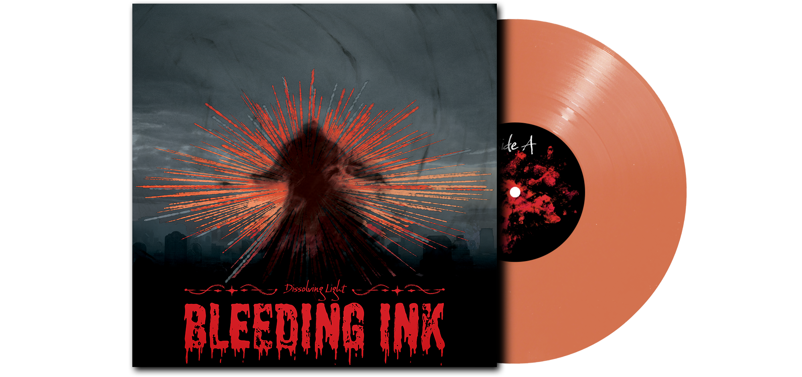

Bleeding Ink
In the realm, between Heaven and Hell, Dissolving Light and Prolonged Trials sentences those to a Fate of Emptiness
Bleeding Ink is an emerging Pop-Punk group, sightings include Abandoned [REDACTED], [REDACTED], Bordering [REDACTED] in the Dark.
Ties between both worlds, underdstading the cruetly of it all. Lightenment brought forward by the group provides a place where souls may rest. Converting Listeners into Followers as a byproduct.